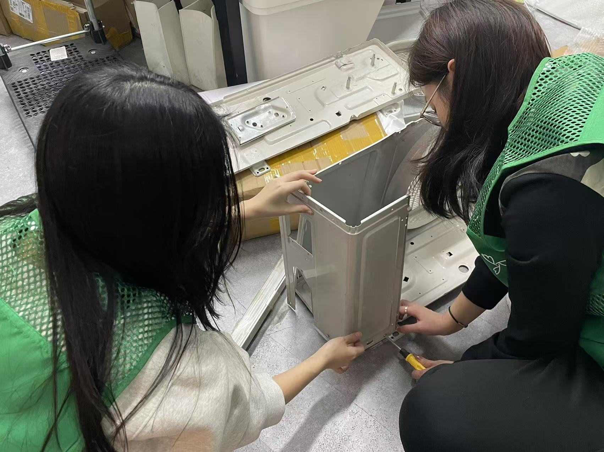
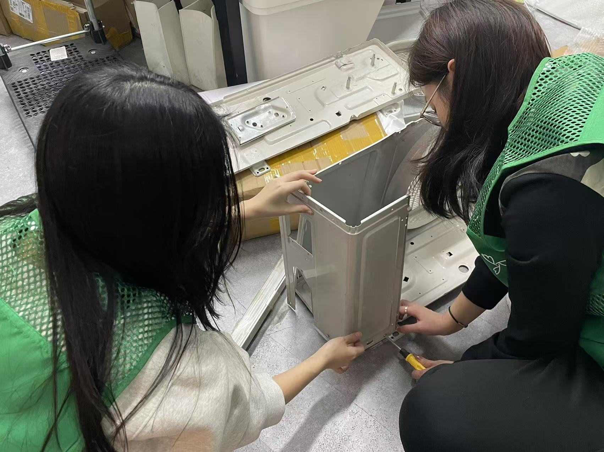

AirNest
An innovative start-up dedicated to urban ecological protection. We aim to protect urban bird populations by recycling discarded outdoor appliances into bird-friendly features, combining conservation, technology, and community engagement.
View Case Study

Ella
A comprehensive service system designed to improve the quality of life for breast cancer survivors through community building, resource sharing, and personalized support networks.
View Case StudyEcho
A conceptual iOS feature that allows users to intuitively annotate photos with audio clips, creating a richer, multi-sensory way to capture and relive memories.
View Case StudyFinding Mr. G
A first-person narrative game that explores the complex world of modern fan culture and idol worship. The game immerses players in a fan's perspective to reveal the potential psychological and emotional impacts of excessive devotion.
View Case Study